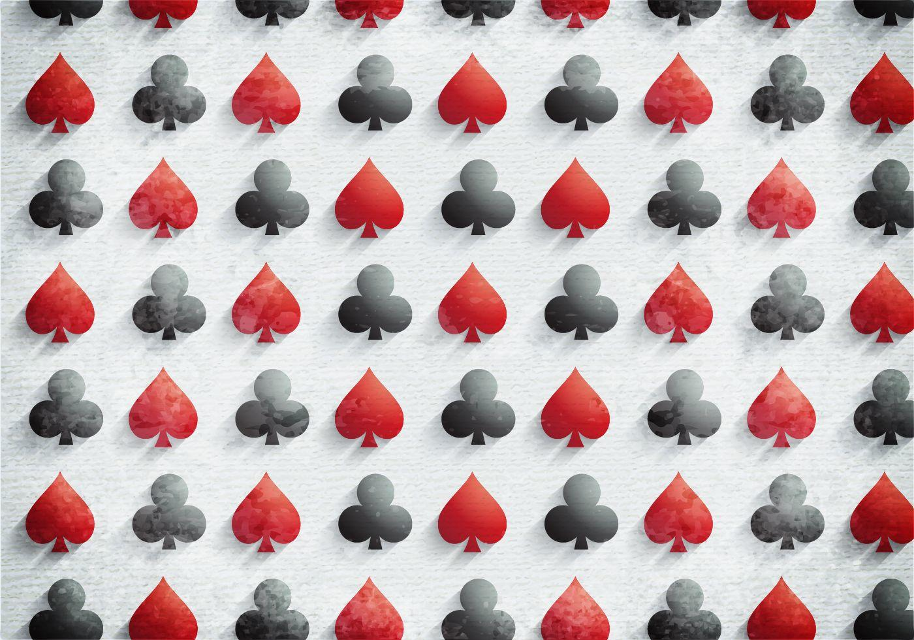
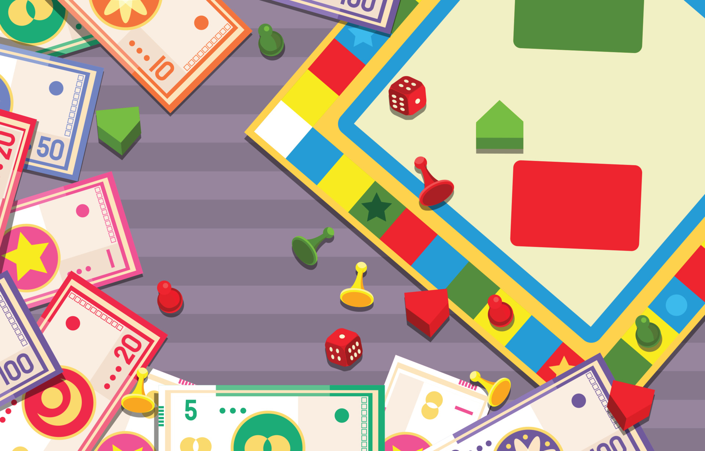

Poker analyzer

Tak Sun Secondary School
May. 2019 - Oct. 2020
May. 2019 - Oct. 2020
- Used C language to design a card analyzer that works to analyze the pattern of a given hand for show-hand card game and to determine the winner by the given hand of cards and betting amount
Link to Code
Find the missing plane
Simon Fraser University
Sep. 2022
Sep. 2022
- Used Java to design a score tracking application based on the board game, Lost Cities, which calculate and track the user score. It allows the user to add, display, edit and delete game record with provided android UI.
- Used JUnit 5 to run test code by obtaining unit test and system test.
Link to Code
Party game record system

Simon Fraser University
Oct. 2022 - Dec. 2022
Oct. 2022 - Dec. 2022
- Used Java to design a score system to store group players’ score, it will generate an achievement level according to the total group scores, scaling by “good score” and “bad score” provided by user. It can also store image for each game played and each game type.
Link to Code
Sentiment Analyzer
Simon Fraser University
Jul. 2023 - Aug. 2023
Jul. 2023 - Aug. 2023
- Used Python, Pyspark, Pandas to do analyze on reddit and weather data.
- Performed data science technique to extract, transform, and load datasets.
- Utilized different machine learning techniques to make a better prediction on the sentiment by the weather features.
- Conducted different statistical test to explore relationship between datasets.
Link to Code